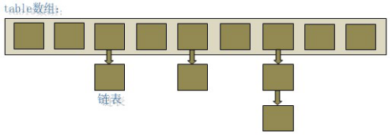
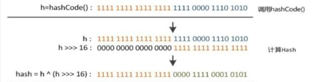
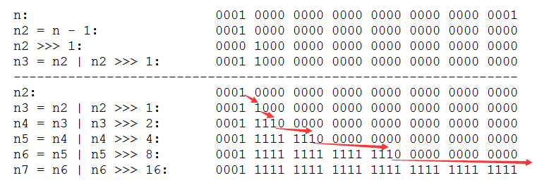

1. HashMap概述：
HashMap是基于哈希表的Map接口的非同步实现。此实现提供所有可选的映射操作，并允许使用null值和null键。此类不保证映射的顺序，特别是它不保证该顺序恒久不变。
2. HashMap的数据结构：
在java编程语言中，最基本的结构就是两种，一个是数组，另外一个是模拟指针（引用），所有的数据结构都可以用这两个基本结构来构造的，HashMap也不例外。HashMap实际上是一个“链表散列”的数据结构，即数组和链表的结合体。

从上图中可以看出，HashMap底层就是一个数组结构，数组中的每一项又是一个链表。当新建一个HashMap的时候，就会初始化一个数组。
源码如下：
1 /**
2 * The table, resized as necessary. Length MUST Always be a power of two.
3 */
4 transient Node<K, V>[] table;
5
6 static class Node<K,V> implements Entry<K, V> {
7 final K key;
8 V value;
9 Node<K, V> next;
10 final int hash;
11 ……
12 }
可以看出，Node就是数组中的元素，每个Node其实就是一个key-value对，它持有一个指向下一个元素的引用，这就构成了链表。
3. HashMap的存取实现：
1) 存储：
1、对Key求Hash值，然后再计算下标
2、如果没有碰撞，直接放入桶中（碰撞的意思是计算得到的Hash值相同，需要放到同一个bucket中）
3、如果碰撞了，以链表的方式链接到后面
4、如果链表长度超过阀值( TREEIFY THRESHOLD==8)，就把链表转成红黑树
5、如果节点已经存在就替换旧值
6、如果桶满了(容量16*加载因子0.75)，就需要 resize（扩容2倍后重排）
1 final V putVal(final int n, final K k, final V value, final boolean b, final boolean b2) {
2 Node<K, V>[] array;
3 int n2;
4 if ((array = this.table) == null || (n2 = array.length) == 0) {
5 n2 = (array = this.resize()).length;
6 }
7 final int n3;
8 Node<K, V> node;
9 if ((node = array[n3 = (n2 - 1 & n)]) == null) {
10 array[n3] = this.newNode(n, k, value, null);
11 }
12 else {
13 Node<K, V> node2 = null;
14 Label_0222: {
15 final K key;
16 if (node.hash == n && ((key = node.key) == k || (k != null && k.equals(key)))) {
17 node2 = node;
18 }
19 else if (node instanceof TreeNode) {
20 node2 = ((TreeNode<K, V>)node).putTreeVal(this, array, n, k, value);
21 }
22 else {
23 int n4;
24 for (n4 = 0; (node2 = node.next) != null; node = node2, ++n4) {
25 if (node2.hash == n) {
26 final K key2;
27 if ((key2 = node2.key) == k) {
28 break Label_0222;
29 }
30 if (k != null && k.equals(key2)) {
31 break Label_0222;
32 }
33 }
34 }
35 node.next = (Node<K, V>)this.newNode(n, (K)k, (V)value, (Node<K, V>)null);
36 if (n4 >= 7) {
37 this.treeifyBin(array, n);
38 }
39 }
40 }
41 if (node2 != null) {
42 final V value2 = node2.value;
43 if (!b || value2 == null) {
44 node2.value = value;
45 }
46 this.afterNodeAccess(node2);
47 return value2;
48 }
49 }
50 ++this.modCount;
51 if (++this.size > this.threshold) {
52 this.resize();
53 }
54 this.afterNodeInsertion(b2);
55 return null;
56 }当系统决定存储HashMap中的key-value对时，完全没有考虑Entry中的value，仅仅只是根据key来计算并决定每个Entry的存储位置。我们完全可以把 Map 集合中的 value 当成 key 的附属，当系统决定了 key 的存储位置之后，value 随之保存在那里即可。
我们可以看到在hashmap中要找到某个元素，需要根据key的hash值来求得对应数组中的位置。如何计算这个位置就是hash算法。前面说过hashmap的数据结构是数组和链表的结合，所以我们当然希望这个hashmap里面的元素位置尽量的分布均匀些，尽量使得每个位置上的元素数量只有一个，那么当我们用hash算法求得这个位置的时候，马上就可以知道对应位置的元素就是我们要的，而不用再去遍历链表。 所以我们首先想到的就是把hashcode对数组长度取模运算，这样一来，元素的分布相对来说是比较均匀的。但是，“模”运算的消耗还是比较大的，能不能找一种更快速，消耗更小的方式
1 static final int hash(final Object o) {
2 int n;
3 if (o == null) {
4 n = 0;
5 }
6 else {
7 final int hashCode = o.hashCode();
8 n = (hashCode ^ hashCode >>> 16);
9 }
10 return n;
11 }
简单来说就是：高16bt不变，低16bit和高16bit做了一个异或(得到的HASHCODE转化为32位的二进制，前16位和后16位低16bit和高16bit做了一个异或)
对于任意给定的对象，只要它的 hashCode() 返回值相同，那么程序调用 hash(int h) 方法所计算得到的 hash 码值总是相同的。
1 public int hashCode() {
2 int h = this.hash;
3 int len = this.value.length;
4 if (h == 0 && len > 0) {
5 char[] s = this.value;
6 for (int i = 0; i < len; ++i) {
7 h = 31 * h + s[i];
8 }
9 //s[0]*31^(len-1) + s[1]*31^(len-2) + ... + s[len-1]
10 this.hash = h;
11 }
12 return h;
13 }我们首先想到的就是把hash值对数组长度取模运算，这样一来，元素的分布相对来说是比较均匀的。但是，“模”运算的消耗还是比较大的，在HashMap中是这样做的：
n3 = (n2 - 1 & n)这个方法非常巧妙，它通过 array.length - 1 & h 来得到该对象的保存位，而HashMap底层数组的长度总是 2 的 n 次方，这是HashMap在速度上的优化。在 HashMap 构造器中有如下代码：
1 static final int tableSizeFor(final int n) {
2 final int n2 = n - 1;
3 final int n3 = n2 | n2 >>> 1;
4 final int n4 = n3 | n3 >>> 2;
5 final int n5 = n4 | n4 >>> 4;
6 final int n6 = n5 | n5 >>> 8;
7 final int n7 = n6 | n6 >>> 16;
8 return (n7 < 0) ? 1 : ((n7 >= 1073741824) ? 1073741824 : (n7 + 1));
9 }
先把容量减一，然后将容量的二进制数为1的位，后1、2、4、8、16位分别置1。最终n7的二进制数即是n2的二进制数最高为1，其后补1的数。
这段代码保证初始化时HashMap的容量总是2的n次方，即底层数组的长度总是为2的n次方（1~2^30）。
当length总是 2 的n次方时，h& (length-1)运算等价于对length取模，也就是h%length，但是&比%具有更高的效率。
这看上去很简单，其实比较有玄机的，我们举个例子来说明：
假设数组长度分别为15和16，优化后的hash码分别为8和9，那么&运算后的结果如下：
h & (table.length-1) hash table.length-1
8 & (15-1)： 0100 & 1110 = 0100
9 & (15-1)： 0101 & 1110 = 0100
-----------------------------------------------------------------------------------------------------------------------
8 & (16-1)： 0100 & 1111 = 0100
9 & (16-1)： 0101 & 1111 = 0101
从上面的例子中可以看出：当它们和15-1（1110）“与”的时候，产生了相同的结果，也就是说它们会定位到数组中的同一个位置上去，这就产生了碰撞，8和9会被放到数组中的同一个位置上形成链表，那么查询的时候就需要遍历这个链表，得到8或者9，这样就降低了查询的效率。同时，我们也可以发现，当数组长度为15的时候，hash值会与15-1（1110）进行“与”，那么 最后一位永远是0，而0001，0011，0101，1001，1011，0111，1101这几个位置永远都不能存放元素了，空间浪费相当大，更糟的是这种情况中，数组可以使用的位置比数组长度小了很多，这意味着进一步增加了碰撞的几率，减慢了查询的效率！而当数组长度为16时，即为2的n次方时，2n-1得到的二进制数的每个位上的值都为1，这使得在低位上&时，得到的和原hash的低位相同，就使得只有相同的hash值的两个值才会被放到数组中的同一个位置上形成链表。
所以说，当数组长度为2的n次幂的时候，不同的key算得得index相同的几率较小，那么数据在数组上分布就比较均匀，也就是说碰撞的几率小，相对的，查询的时候就不用遍历某个位置上的链表，这样查询效率也就较高了。
根据上面 put 方法的源代码可以看出，当程序试图将一个key-value对放入HashMap中时，程序首先根据该 key 的 hashCode() 返回值决定该 Node 的存储位置：如果两个 Node 的 key 的 hashCode() 返回值相同，那它们的存储位置相同。如果这两个 Node 的 key 通过 equals 比较返回 true，新添加 Node 的 value 将覆盖集合中原有 Node 的 value，但key不会覆盖。如果这两个 Node 的 key 通过 equals 比较返回 false，新添加的 Node 将与集合中原有 Node 形成 Node 链。
2) 读取：
1 final Node<K, V> getNode(final int n, final Object o) {
2 final Node<K, V>[] table;
3 final int length;
4 final Node<K, V> node;
5 if ((table = this.table) != null && (length = table.length) > 0 && (node = table[length - 1 & n]) != null) {
6 final K key;
7 if (node.hash == n && ((key = node.key) == o || (o != null && o.equals(key)))) {
8 return node;
9 }
10 Node<K, V> node2;
11 if ((node2 = node.next) != null) {
12 if (node instanceof TreeNode) {
13 return ((TreeNode<K, V>)node).getTreeNode(n, o);
14 }
15 K key2;
16 while (node2.hash != n || ((key2 = node2.key) != o && (o == null || !o.equals(key2)))) {
17 if ((node2 = node2.next) == null) {
18 return null;
19 }
20 }
21 return node2;
22 }
23 }
24 return null;
25 }有了上面存储时的hash算法作为基础，理解起来这段代码就很容易了。从上面的源代码中可以看出：从HashMap中get元素时，首先计算key的hashCode，找到数组中对应位置的某一元素，然后通过key的equals方法在对应位置的链表中找到需要的元素。
3) 归纳起来简单地说，HashMap 在底层将 key-value 当成一个整体进行处理，这个整体就是一个 Node 对象。HashMap底层采用一个 Node [] 数组来保存所有的 key-value 对，当需要存储一个 Node 对象时，会根据hash算法来决定其在数组中的存储位置，在根据equals方法决定其在该数组位置上的链表中的存储位置；当需要取出一个Node 时，也会根据hash算法找到其在数组中的存储位置，再根据equals方法从该位置上的链表中取出该Node。
4. HashMap的resize（rehash）：
当HashMap中的元素越来越多的时候，hash冲突的几率也就越来越高，因为数组的长度是固定的。所以为了提高查询的效率，就要对HashMap的数组进行扩容，数组扩容这个操作也会出现在ArrayList中，这是一个常用的操作，而在HashMap数组扩容之后，最消耗性能的点就出现了：原数组中的数据必须重新计算其在新数组中的位置，并放进去，这就是resize。
那么HashMap什么时候进行扩容呢？当HashMap中的元素个数超过数组大小*loadFactor时，就会进行数组扩容，loadFactor的默认值为0.75，这是一个折中的取值。也就是说，默认情况下，数组大小为16，那么当HashMap中元素个数超过16*0.75=12的时候，就把数组的大小扩展为 2*16=32，即扩大一倍，然后重新计算每个元素在数组中的位置，而这是一个非常消耗性能的操作，所以如果我们已经预知HashMap中元素的个数，那么预设元素的个数能够有效的提高HashMap的性能。比如说，我们有1000个元素new HashMap(1000), 但是理论上来讲new HashMap(1024)更合适，不过上面已经说过，即使是1000，HashMap也自动会将其设置为1024。 但是new HashMap(1024)还不是更合适的，因为0.75*1024 < 1000, 也就是说为了让0.75 * size > 1000, 我们必须这样new HashMap(2048)才最合适，既考虑了&的问题，也避免了resize的问题。
5. HashMap的性能参数：
HashMap 包含如下几个构造器：
HashMap()：构建一个初始容量为 16，负载因子为 0.75 的 HashMap。
HashMap(int initialCapacity)：构建一个初始容量为 initialCapacity，负载因子为 0.75 的 HashMap。
HashMap(int initialCapacity, float loadFactor)：以指定初始容量、指定的负载因子创建一个 HashMap。
HashMap的基础构造器HashMap(int initialCapacity, float loadFactor)带有两个参数，它们是初始容量initialCapacity和加载因子loadFactor。
initialCapacity：HashMap的最大容量，即为底层数组的长度。
loadFactor：负载因子loadFactor定义为：散列表的实际元素数目(n)/ 散列表的容量(m)。
负载因子衡量的是一个散列表的空间的使用程度，负载因子越大表示散列表的装填程度越高，反之愈小。对于使用链表法的散列表来说，查找一个元素的平均时间是O(1+a)，因此如果负载因子越大，对空间的利用更充分，然而后果是查找效率的降低；如果负载因子太小，那么散列表的数据将过于稀疏，对空间造成严重浪费。
HashMap的实现中，通过threshold字段来判断HashMap的最大容量：
1 this.threshold = tableSizeFor(n);
结合tableSizeFor函数代码可知，threshold就是在此loadFactor和capacity对应下允许的最大元素数目，超过这个数目就重新resize，以降低实际的负载因子。默认的的负载因子0.75是对空间和时间效率的一个平衡选择。当容量超出此最大容量时， resize后的HashMap容量是容量的两倍：
1 final float n = size / this.loadFactor + 1.0f;
2 final int n2 = (n < 1.07374182E9f) ? ((int)n) : 1073741824;
3 if (n2 > this.threshold) {
4 this.threshold = tableSizeFor(n2);
5 }6. Fail-Fast机制：
我们知道java.util.HashMap不是线程安全的，因此如果在使用迭代器的过程中有其他线程修改了map，那么将抛出ConcurrentModificationException，这就是所谓fail-fast策略。
这一策略在源码中的实现是通过modCount域，modCount顾名思义就是修改次数，对HashMap内容的修改都将增加这个值，那么在迭代器初始化过程中会将这个值赋给迭代器的expectedModCount。
1 HashIterator() {
2 this.expectedModCount = HashMap.this.modCount;
3 final Node<K, V>[] table = HashMap.this.table;
4 final Node<K, V> node = null;
5 this.next = node;
6 this.current = node;
7 this.index = 0;
8 if (table != null && HashMap.this.size > 0) {
9 while (this.index < table.length && (this.next = table[this.index++]) == null) {}
10 }
11 }在迭代过程中，判断modCount跟expectedModCount是否相等，如果不相等就表示已经有其他线程修改了Map。
1 final Node<K, V> nextNode() {
2 final Node<K, V> next = this.next;
3 if (HashMap.this.modCount != this.expectedModCount) {
4 throw new ConcurrentModificationException();
5 }
6 ...
7 }在HashMap的API中指出：
由所有HashMap类的“collection 视图方法”所返回的迭代器都是快速失败的：在迭代器创建之后，如果从结构上对映射进行修改，除非通过迭代器本身的 remove 方法，其他任何时间任何方式的修改，迭代器都将抛出 ConcurrentModificationException。因此，面对并发的修改，迭代器很快就会完全失败，而不冒在将来不确定的时间发生任意不确定行为的风险。
注意，迭代器的快速失败行为不能得到保证，一般来说，存在非同步的并发修改时，不可能作出任何坚决的保证。快速失败迭代器尽最大努力抛 ConcurrentModificationException。因此，编写依赖于此异常的程序的做法是错误的，正确做法是：迭代器的快速失败行为应该仅用于检测程序错误。
1.转载注明：https://www.cnblogs.com/anyeshouhu/p/11527329.html
2.本文为个人笔记、心得，可能引用其它文章，所以博客只在私自范围内供大家学习参考。
参考博文：
https://www.cnblogs.com/yuanblog/p/4441017.html
https://baijiahao.baidu.com/s?id=1618550070727689060&wfr=spider&for=pc